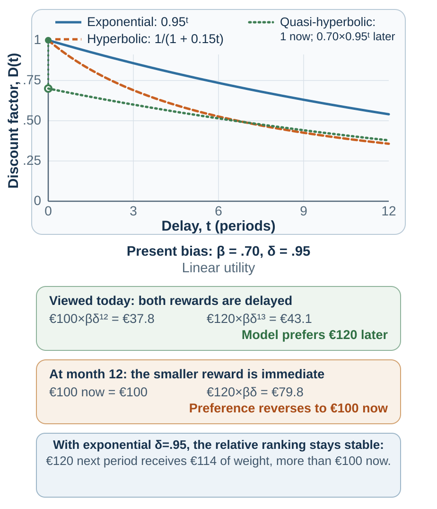

19 Intertemporal Decision Making
Why Later Loses to Now
“To fully account for impulsiveness, there has to be more than just a decline in effectiveness as reward is delayed.”
— George Ainslie, “Specious Reward”, 1975, p. 470
Choose between €100 today and €120 in one month. Now choose between €100 in twelve months and €120 in thirteen months.
Many people are more willing to wait in the second choice than in the first. Yet both require waiting one additional month for the same additional €20. If the distant choice later reverses when the smaller reward becomes immediate, the person has changed a plan as the dates approached.1
Consider a manager who decides on Friday to discuss a recurring problem with a colleague on Monday. On Monday, the discomfort is immediate and the improvement in their working relationship remains uncertain. Postponing until Tuesday feels reasonable, just as it did the week before. What would help the manager carry out the conversation—and how would the answer differ if waiting really allowed better information or a calmer setting?
Learning goals
- Use discounted utility and present bias to diagnose preference reversal without reducing it to weak willpower.
- Separate time preference from liquidity, trust, uncertainty, utility curvature, and task representation.
- Build a credible bridge from a present action to a delayed benefit using the MOST audit.
The benchmark: value across time
The discounted-utility model represents a stream of outcomes by reducing the present weight of outcomes that arrive later (Samuelson, 1937). In a simple exponential form,
\[ U = \sum_{t=0}^{T} \delta^t u(c_t), \qquad 0 < \delta \leq 1. \]
Here, \(u(c_t)\) is the utility of consumption or another outcome at time \(t\), and \(\delta\) is the weight placed on each additional period of delay. With preferences and relevant circumstances held fixed, exponential discounting preserves the relative ranking of two future outcomes as time passes. If €120 in thirteen months is preferred to €100 in twelve months, moving both rewards eleven months closer should not reverse the preference.
The benchmark is useful even when it is not descriptively accurate. It forces a decision-maker to state the outcome stream, time horizon, assumptions, and trade-off between present and future. It also separates two ideas that ordinary language blends:
- Utility curvature: an additional €100 may matter less to a wealthy person than to someone who cannot pay rent.
- Time weighting: the same valued outcome may receive less weight because it arrives later.
Observed choices usually identify neither component cleanly. A person choosing money today may be impatient, cash-constrained, worried that the promise will not be honored, or facing an urgent need whose marginal value is high. Frederick, Loewenstein, and O’Donoghue (2002) therefore warn against treating every implied discount rate as pure time preference.
Why delay changes more than mathematical value
Present bias and preference reversal
Exponential discounting treats each added period proportionally. Human choices often display declining impatience: the difference between now and soon feels larger than an equal difference between two distant dates. Hyperbolic models capture this pattern by making the implied discount rate fall with delay (Ainslie, 1975). Quasi-hyperbolic models simplify it into a special penalty for anything not immediate, followed by more regular discounting across later periods (Laibson, 1997).

The important psychological result is dynamic inconsistency. A plan that looks best from a distance can lose when temptation or effort becomes immediate. O’Donoghue and Rabin (1999) show how present bias can produce two familiar failures:
- procrastination: an action has an immediate cost and delayed benefit, so the person repeatedly postpones it;
- premature indulgence: an action has an immediate reward and delayed cost, so the person repeatedly brings it forward.
The manager’s postponed conversation contains both sides: delaying avoids discomfort now while moving the unresolved problem into the future.
A person can also differ in awareness. A sophisticated present-biased chooser anticipates future reversal and seeks a commitment device. A naïve chooser expects future intentions to survive unchanged. A partly sophisticated chooser knows there is a problem but underestimates its size.
Commitment devices alter future options or make deviation costly before the tempting state arrives. A voluntary deposit contract is one example; its benefits and limits are examined below.
Credibility, attention, and imagination

Waiting is rarely just empty time. Delay changes at least six parts of the choice:
| Mechanism | Diagnostic question | Example |
|---|---|---|
| Immediate salience | Which outcome can be felt or imagined now? | The taste of dessert competes with an abstract health benefit. |
| Uncertainty | Will the later outcome arrive, and can the promise be trusted? | An unstable employer promises a future bonus. |
| Liquidity and need | What urgent constraint changes marginal value today? | Cash now prevents a late fee or missed meal. |
| Subjective time | How long does the interval feel? | “In six months” feels different from a calendar date. |
| Future-self continuity | Does the later beneficiary feel like me? | Retirement saving can feel like giving money to a stranger. |
| Anticipatory emotion | Is waiting filled with savoring, dread, anxiety, or relief? | Delaying a holiday can create pleasure; delaying a medical result can create dread. |
The diagnosis changes the intervention. A future-self exercise cannot repair an institution’s broken promises, and advice about patience cannot pay an overdue bill.
Amount, sign, wording, search, and domain
There is no single discount rate that travels unchanged across every choice. Several recurring patterns show that time preferences are partly constructed.
The classroom mnemonic MOST keeps four option attributes visible:
| Letter | Attribute | Recurring pattern | Diagnostic |
|---|---|---|---|
| M | Magnitude | Larger outcomes are often discounted less steeply | Does a fixed cost of waiting matter more for a small reward? |
| O | Opportunity cost | A choice hides what is received at the other date | Are both outcome streams, including zeros, visible? |
| S | Sign | Delayed gains and losses are not mirror images | Do dread, savoring, or a reference point change the comparison? |
| T | Time frame | Dates and delays create different representations | Does the wording make waiting or the future event salient? |
Larger outcomes often receive more patience.
People commonly discount small rewards more steeply than large rewards—the magnitude effect (Thaler, 1981). Someone who refuses to wait for €10 may wait for €10,000 even when the proportional return is the same. Larger stakes can justify fixed waiting costs, attract more attention, or invite more deliberate comparison.
Gains and losses are not temporal mirror images.
Delayed gains are often discounted differently from delayed losses. People may be impatient to receive a gain yet willing to postpone a payment. But waiting for a negative outcome can also generate dread, making sooner resolution preferable. The sign effect therefore depends on framing, anticipation, and domain (Loewenstein & Prelec, 1992; Weber et al., 2007).
Dates and delays create different representations.
“In six months” emphasizes waiting. “On February 12” locates an event in a calendar and may make it more concrete. Read and colleagues (2005) found lower discounting when outcomes were described with dates rather than delays. A calendar date can make the future event easier to imagine.
The invisible zero can be made visible.
The choice “€100 today or €120 in a month” hides two complete outcome streams. The fuller representation is:
- €100 today and €0 in one month, or
- €0 today and €120 in one month.
Making both zeros explicit increased selection of delayed rewards in the hidden-zero studies (Magen et al., 2008). The mechanism connects directly to opportunity-cost neglect: the immediate reward is not free; it replaces a later reward.
The search path can construct patience.
An intertemporal option has at least two attributes: amount and time. A person can search within an option, integrating “€100 now” before considering “€120 later.” Or the person can search across an attribute, comparing €100 with €120 and then now with one month. These paths make different contrasts salient.
Reeck, Wall, and Johnson (2017) traced information search and identified substantial heterogeneity in these strategies. Comparative searchers—who moved across amounts or across times—made more patient choices than integrative searchers. In a second experiment, the researchers made one search path slightly harder, causally shifting both search and choice. Most participants reported no awareness that the manipulation had changed their behavior.
The finding shows that a measured “discount rate” can partly reflect how information was searched. Inspect both the complete packages and the separate amount and time differences; disagreement between them is a reason to examine the representation.
Money, health, environment, effort, and relationships differ.
Money is tradable and often measurable. Health, pain, environmental quality, effort, and social trust are not interchangeable bank balances. People may discount across domains differently because uncertainty, irreversibility, emotion, identity, and moral meaning differ (Chapman, 1996; Hardisty & Weber, 2009).
A decision about a delayed health benefit may involve side effects now, uncertain benefit later, caregiving burden, trust in the institution, or values the experiment did not measure.
What did the patience task identify?
A multiple price list seems to turn patience into a number: at which row does a person switch from a smaller-sooner to a larger-later amount? But choosing the earlier payment could also keep an urgent bill paid or avoid a promise the person distrusts. Treating either constraint as impatience would point to the wrong remedy. The task must separate these sources of the same observed choice.
| Possible component | How it can resemble impatience | Design response |
|---|---|---|
| Utility curvature | €200 may be worth less than twice €100 | Jointly estimate or independently measure curvature |
| Payment risk | A later promise may be less credible | Equalize and verify payment reliability |
| Liquidity | Immediate cash may prevent a costly shortfall | Measure constraints; do not call urgent need a preference |
| Transaction costs | Waiting may require effort, return visits, or account access | Match procedures and delivery costs |
| Inflation and beliefs | The later amount may buy less | Elicit expected purchasing power and macro conditions |
| Task representation | Defaults, dates, search order, and hidden zeros change attention | Vary representation and report sensitivity |
Incentive-compatible payment can improve a task, but it does not solve every identification problem. Cross-domain comparisons require matched procedures and explicit assumptions. A reported association between patience and education, saving, or health is not by itself evidence that changing one stable discount parameter will change those outcomes.
The future must become believable and self-relevant
Delayed outcomes often lose because they are represented poorly. The immediate reward is sensory and specific; the future reward is verbal and vague. Episodic future thinking asks people to imagine a personally relevant future event connected to the delayed outcome. Peters and Büchel (2010) found that individualized future-event cues reduced delay discounting in their task, with the vividness of episodic imagination predicting the change. Making a future concrete can increase its present decision weight.
A related question is whether the later beneficiary feels like oneself. People with a stronger measured connection to their future selves tend to value delayed outcomes more (Ersner-Hershfield et al., 2009; Hershfield, 2011). That association motivated interventions that make the later self easier to imagine.
Subjective time also matters. Calendar structure, temporal landmarks, and imagined events can change how long a delay feels. Zauberman and colleagues (2009) found that nonlinear perception of time contributes to observed discounting. A distant future may be undervalued because it feels both far away and poorly represented.
Hershfield and colleagues (2011) tested age-progressed images of participants. In their first study, people shown an older version of their own avatar allocated an average $172 of a hypothetical $1,000 windfall to retirement, compared with $80 among those shown their current avatar. A practical application still needs a feasible action and a way to measure whether people carry it out.
Scarcity and trust: when now is rational
Waiting can preserve a long-term goal, so choosing an immediate reward is easily read as weak self-control. But a person who cannot cover an urgent need, or cannot trust the promised payment, faces a different trade-off. Advising patience may increase the hardship. Before trying to change the preference, examine what waiting would actually cost.
If income is unstable, a promised future reward may be risky. If institutions have broken promises, trust should be lower. If a person faces urgent needs or expensive debt, money today can have much higher marginal value. If inflation or political instability threatens future purchasing power, waiting changes the outcome itself. If a medical condition can deteriorate, delay may be dangerous.
Scarcity certainly changes constraints. An influential set of studies proposed that it can also capture attention and impose cognitive load (Mani et al., 2013; Mullainathan & Shafir, 2013), but the size and generality of this additional cognitive mechanism remain contested. Carvalho, Meier, and Wang (2016), for example, found little evidence that being just before payday reduced cognitive function or decision quality in a low-income US sample, even though short-run resource availability changed. The larger lesson is that measured patience can partly reflect constraints, urgent needs, liquidity, and the reliability of the future.
The classic marshmallow task is therefore not a pure assay of willpower. A child chooses between eating a treat now and waiting for a larger reward, but waiting also depends on attention strategy, incentives, and whether the promise seems credible. Kidd, Palmeri, and Aslin (2013) experimentally varied whether an adult had first kept a promise; children waited longer after reliable experience. That comparison identifies an effect of the immediate environment on waiting.
Whether waiting predicts later achievement is a different question. In a longitudinal analysis concentrating on children whose mothers had not completed college, Watts, Duncan, and Quan (2018) found that each additional minute waited at age four predicted roughly one tenth of a standard deviation higher achievement at age fifteen before adjustment. That association shrank by about two thirds after accounting for family background, early cognitive ability, and the home environment. Waiting was not randomly assigned, so the remaining association does not establish what teaching a child to wait longer would cause. Together, the studies show why a single waiting time cannot stand for either character or a guaranteed path to later success.
Design the bridge, not only the destination
A delayed benefit needs a feasible first step. For the manager, preparing one observation and an opening question may matter more than another reminder of the relationship’s long-term value. A date and appointment then connect that preparation to a setting in which it can be used.
Where the barrier is different, change the bridge. A credible guarantee or staged payment can address uncertainty about a promised benefit; visible progress or a compatible immediate pleasure can help sustain effort. Commitment is a further option when the person expects to reverse a considered plan.
Temptation bundling illustrates an immediate bridge: combine a “want” available now with a “should” that produces delayed benefit, such as listening to a desired audiobook only while exercising (Milkman et al., 2014). It works only when the bundle remains controlled and the added reward does not undermine the goal.
Evidence update: commitment devices require current evidence
A writer may know that another deadline will approach before the draft feels ready and want a reason to begin sooner. A commitment device changes the later choice environment by restricting an option or making deviation costly—for example, a voluntary deposit lost if the draft is late. That restriction can help a plan survive temptation, but it also removes flexibility if illness or an unexpected obligation intervenes. The question is which commitments improve follow-through at an acceptable cost.
A reminder can help someone remember a plan without binding them to it; commitment adds a restriction or cost that remains relevant when preferences change. A deposit contract is not beneficial merely because it is binding; losses, shame, and exclusion can outweigh improved follow-through.
The familiar deadline study by Ariely and Wertenbroch (2002) was retracted on September 2, 2026. It had reported benefits from self-imposed deadlines and stronger proofreading performance under evenly spaced external deadlines. A direct replication found negligible deadline effects (Hyndman & Bisin, 2026), and the journal’s retraction notice reported that the original data’s authenticity and completeness could not be established and that the findings were no longer reliable. Both authors agreed to the retraction. The original study should not support a recommendation to impose deadlines; Appendix F explains how to update a claim without discarding every related mechanism.
Other commitment devices have been evaluated separately. For example, Giné, Karlan, and Zinman (2010) evaluated a voluntary deposit contract for smoking cessation. The practical rule is to test each device in its domain, report take-up and harm as well as average effects, and avoid building a policy on a memorable unreplicated example.
Worked application: saving from the next pay increase
“I should save more” leaves the amount and timing to be renegotiated at every payday. One possible design starts a contribution with the next pay increase, while protecting an accessible emergency fund. Before choosing it, check income stability, fees, investment risk, and whether the contribution remains adjustable. Showing progress toward a concrete future goal can keep the reason for saving visible.
Worked application: a difficult conversation
A manager plans to address a recurring problem but delays because discomfort is immediate and relationship improvement is uncertain. A date-and-time plan reduces repeated renegotiation: “At Tuesday’s one-to-one, after reviewing current work, I will describe the observable pattern and ask for their view.” A brief script reduces ability cost. Warm-honesty language makes the immediate action safer. A review date turns the conversation into a test rather than a verdict.
Here, the delayed reward is not money. It is trust and a more workable relationship. The same architecture applies.
Ethics: whose future is being protected?
Institutions often ask individuals to bear costs now for collective or delayed benefits. That can be justified, but the distribution matters. A policy that celebrates patience while shifting present hardship onto people with the least liquidity is not neutral. Nor is a dark pattern that exploits present bias to sell credit, subscriptions, gambling, or addictive engagement.
Make the entire time path and its distribution visible. A commitment should protect the chooser’s considered goal, with a proportionate response to a lapse and a way to respond when circumstances change.
Practice Lab
Choose a saving, retirement, health, or project decision with an immediate cost and delayed benefit. Draw both complete outcome streams, including the hidden zeros. Apply MOST—Magnitude, Opportunity cost, Sign, and Time frame—then mark liquidity, trust, uncertainty, and the moment of likely reversal. Produce one bridge intervention, one recovery path, and a seven-day observable prediction.
Take it forward
For the manager, “have the conversation” becomes an appointment, an opening sentence, and a specific observation to discuss. These preparations reduce the immediate obstacle. The aim is to help the considered plan survive its encounter with Monday.
References cited in this chapter
Ainslie, G. (1975). Specious reward: A behavioral theory of impulsiveness and impulse control. Psychological Bulletin, 82(4), 463–496.
Ariely, D., & Wertenbroch, K. (2002). Procrastination, deadlines, and performance: Self-control by precommitment. Psychological Science, 13(3), 219–224. Retracted September 2026.
Carvalho, L. S., Meier, S., & Wang, S. W. (2016). Poverty and economic decision-making: Evidence from changes in financial resources at payday. American Economic Review, 106(2), 260–284.
Chapman, G. B. (1996). Temporal discounting and utility for health and money. Journal of Experimental Psychology: Learning, Memory, and Cognition, 22(3), 771–791.
Ersner-Hershfield, H., Wimmer, G. E., & Knutson, B. (2009). Saving for the future self: Neural measures of future self-continuity predict temporal discounting. Social Cognitive and Affective Neuroscience, 4(1), 85–92.
Frederick, S., Loewenstein, G., & O’Donoghue, T. (2002). Time discounting and time preference: A critical review. Journal of Economic Literature, 40(2), 351–401.
Giné, X., Karlan, D., & Zinman, J. (2010). Put your money where your butt is: A commitment contract for smoking cessation. American Economic Journal: Applied Economics, 2(4), 213–235.
Hardisty, D. J., & Weber, E. U. (2009). Discounting future green: Money versus the environment. Journal of Experimental Psychology: General, 138(3), 329–340.
Hershfield, H. E. (2011). Future self-continuity: How conceptions of the future self transform intertemporal choice. Annals of the New York Academy of Sciences, 1235(1), 30–43.
Hershfield, H. E., Goldstein, D. G., Sharpe, W. F., Fox, J., Yeykelis, L., Carstensen, L. L., & Bailenson, J. N. (2011). Increasing saving behavior through age-progressed renderings of the future self. Journal of Marketing Research, 48(SPL), S23–S37.
Hyndman, K., & Bisin, A. (2026). Replication of “Procrastination, deadlines, and performance: Self-control by precommitment.” Psychological Science, 37(8), 557–571. https://doi.org/10.1177/09567976261460772
Kidd, C., Palmeri, H., & Aslin, R. N. (2013). Rational snacking: Young children’s decision-making on the marshmallow task is moderated by beliefs about environmental reliability. Cognition, 126(1), 109–114.
Laibson, D. (1997). Golden eggs and hyperbolic discounting. Quarterly Journal of Economics, 112(2), 443–477.
Loewenstein, G., & Prelec, D. (1992). Anomalies in intertemporal choice: Evidence and an interpretation. Quarterly Journal of Economics, 107(2), 573–597.
Magen, E., Dweck, C. S., & Gross, J. J. (2008). The hidden-zero effect: Representing a single choice as an extended sequence reduces impulsive choice. Psychological Science, 19(7), 648–649.
Mani, A., Mullainathan, S., Shafir, E., & Zhao, J. (2013). Poverty impedes cognitive function. Science, 341(6149), 976–980.
Milkman, K. L., Minson, J. A., & Volpp, K. G. M. (2014). Holding the Hunger Games hostage at the gym: An evaluation of temptation bundling. Management Science, 60(2), 283–299.
Mullainathan, S., & Shafir, E. (2013). Scarcity: Why having too little means so much. Times Books.
O’Donoghue, T., & Rabin, M. (1999). Doing it now or later. American Economic Review, 89(1), 103–124.
Peters, J., & Büchel, C. (2010). Episodic future thinking reduces reward delay discounting through an enhancement of prefrontal-mediotemporal interactions. Neuron, 66(1), 138–148.
Psychological Science. (2026, September 2). Retraction: Procrastination, deadlines, and performance: Self-control by precommitment. Psychological Science. Advance online publication. https://doi.org/10.1177/09567976261488042
Read, D., Frederick, S., Orsel, B., & Rahman, J. (2005). Four score and seven years from now: The date/delay effect in temporal discounting. Management Science, 51(9), 1326–1335.
Reeck, C., Wall, D., & Johnson, E. J. (2017). Search predicts and changes patience in intertemporal choice. Proceedings of the National Academy of Sciences, 114(45), 11890–11895.
Samuelson, P. A. (1937). A note on measurement of utility. Review of Economic Studies, 4(2), 155–161.
Thaler, R. H. (1981). Some empirical evidence on dynamic inconsistency. Economics Letters, 8(3), 201–207.
Watts, T. W., Duncan, G. J., & Quan, H. (2018). Revisiting the marshmallow test: A conceptual replication investigating links between early delay of gratification and later outcomes. Psychological Science, 29(7), 1159–1177. https://doi.org/10.1177/0956797618761661
Weber, E. U., Johnson, E. J., Milch, K. F., Chang, H., Brodscholl, J. C., & Goldstein, D. G. (2007). Asymmetric discounting in intertemporal choice: A query-theory account. Psychological Science, 18(6), 516–523.
Zauberman, G., Kim, B. K., Malkoc, S. A., & Bettman, J. R. (2009). Discounting time and time discounting: Subjective time perception and intertemporal preferences. Journal of Marketing Research, 46(4), 543–556.
Hypothetical comparisons reveal a pattern consistent with reversal; observing an actual reversal requires following the person over time.↩︎